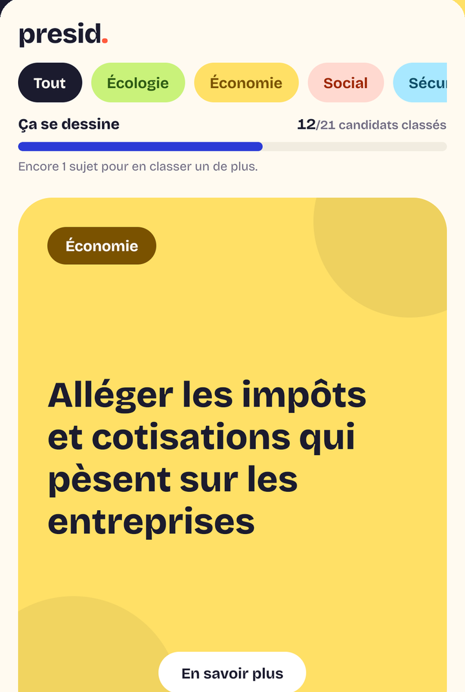
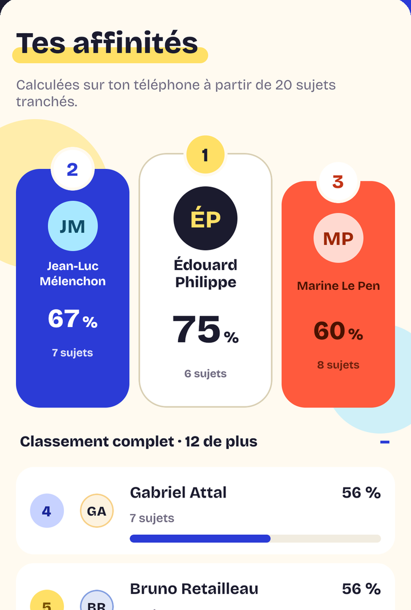
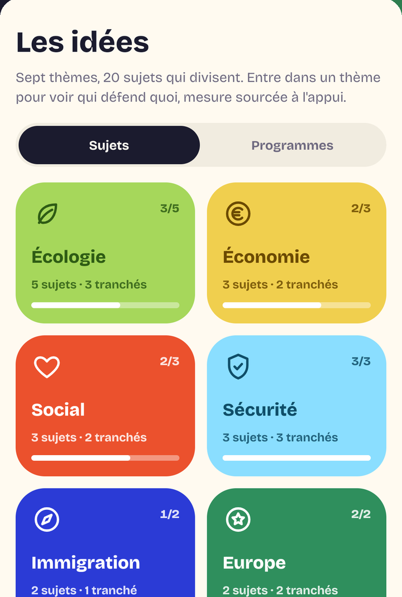
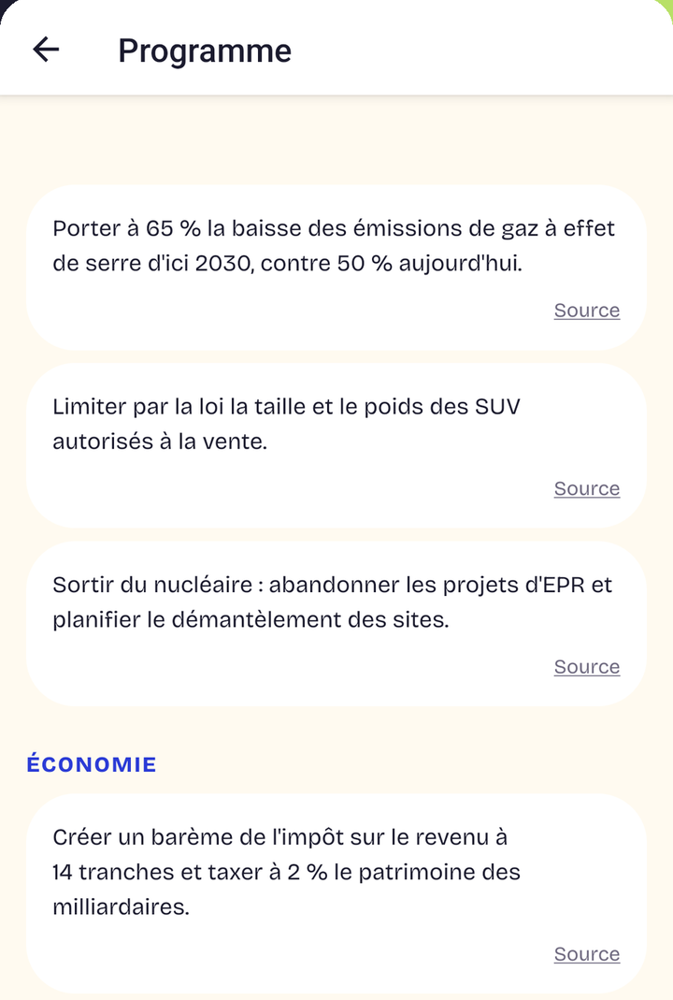
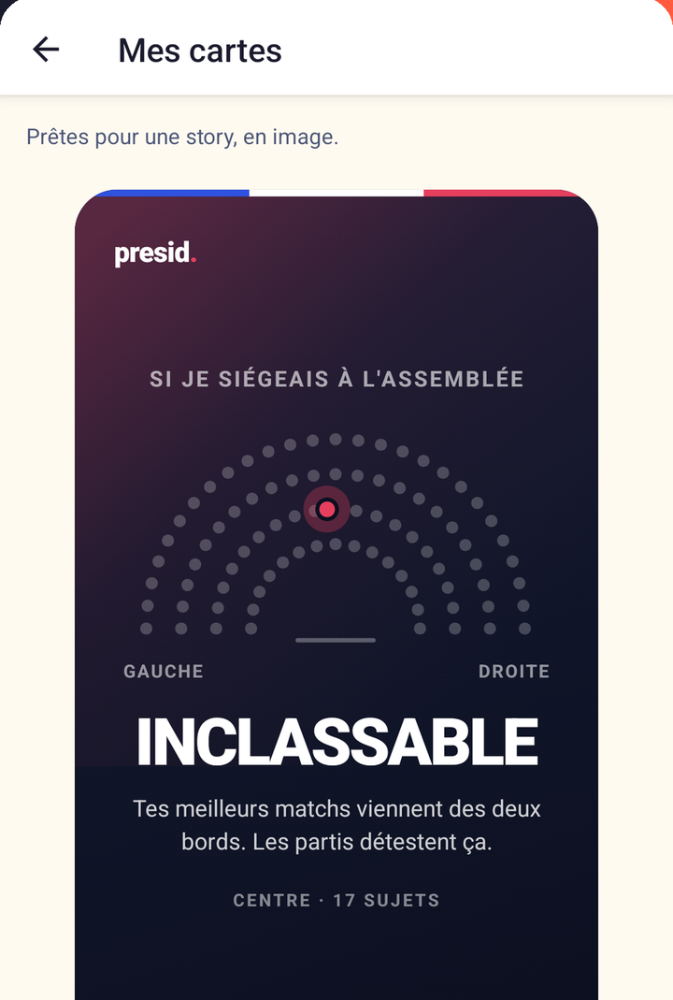

Abroger le report de l'âge légal de départ à la retraite à 64 ans
Swipe des idées,
pas des visages.
presid vous fait voter sur des sujets, puis vous montre quelles personnalités de la présidentielle 2027 pensent comme vous — et sur quelles preuves.
Gratuit · sans compte · sans publicité · aucune donnée personnelle collectée. Sur iPhone (iOS 16.4 ou plus récent) et sur Android.
Alléger les impôts et cotisations qui pèsent sur les entreprises
Contraindre les transports les plus polluants, quitte à les renchérir ou les interdire
Renforcer les moyens de la police, de la justice et des prisons
Faire payer davantage les plus grandes fortunes et les plus hauts revenus
Limiter strictement l'entrée de nouveaux immigrants sur le territoire français
Permettre à des citoyens de déclencher eux-mêmes un référendum, sans passer par le Parlement
Autoriser une aide médicale à mourir pour les malades en fin de vie
Essayez : swipez la carte, ou utilisez les flèches. Rien n'est enregistré.





Comment ça marche
1
Vous tranchez des sujets
Des énoncés généraux — le nucléaire, la retraite, l'AME — sur lesquels plusieurs personnalités se sont réellement prononcées. Pour, contre, ou plus fort si le sujet compte pour vous.
2
Aucun nom avant votre vote
C'est la règle du jeu, et elle n'a pas d'exception : ni photo, ni nom, ni parti sur la carte. Vous répondez à l'idée, pas à la tête de celui qui la porte.
3
Le calcul reste sur votre téléphone
Vos réponses aux sujets ne quittent jamais votre téléphone, et le classement se fabrique hors ligne, chez vous. Seul l'avis « pour » ou « contre » de la question du jour, si vous choisissez de le donner, est compté de façon anonyme.
La méthode
L'argument de presid n'est pas le résultat, c'est ce qui le rend vérifiable. Quatre règles, tenues sans exception.
- Une position, une preuve. Une personnalité n'est rattachée à un camp que si un document tranche l'énoncé sans raisonnement intermédiaire : une déclaration, un programme, un scrutin nominatif à l'Assemblée. Rien n'est déduit d'une appartenance partisane — au scrutin sur le narcotrafic, deux députés du même bord ont voté à l'opposé l'un de l'autre.
- Cinq positions minimum pour être classé. En dessous, une personnalité reste consultable mais n'apparaît jamais au classement. C'est un manque de sources, pas un jugement — et ça évite les scores spectaculaires calculés sur deux réponses.
- Un sujet sans camp adverse prouvé est supprimé. Six sujets ont disparu du corpus pour cette raison, dont le SMIC et la sortie de l'Union européenne : le camp « contre » n'y était documenté nulle part.
- Les égalités ne sont pas départagées au hasard. Chaque téléphone tire son propre départage, une fois pour toutes. Deux personnes à égalité parfaite ne verront pas le même ordre — et personne ne bénéficie d'un avantage national.
presid n'appelle à voter pour personne. Un pourcentage d'affinité n'est pas une recommandation : il dit combien de vos réponses coïncident avec des positions documentées, sur les sujets que vous avez tranchés. Rien de plus.
Le corpus, au 8 septembre 2026
20
sujets tranchés
341
propositions sourcées
156
positions prouvées
21
personnalités classables
21 classables — cinq positions prouvées au moins
10 suivies, pas encore classables
Une pastille par personnalité suivie. Le corpus grossit à mesure que les prises de position deviennent publiques, et ces chiffres bougent avec lui — d'où la date.
Ce que presid ne fait pas
Aucune donnée personnelle collectée
Pas de compte, pas de mesure d'audience, pas de publicité, pas de traceur. La seule chose qui sort du téléphone, si vous le choisissez, est votre avis à la question du jour, sans aucun identifiant. Détail.
Aucun portrait
Les personnalités sont représentées par un monogramme. Une photo de presse n'emporte pas le droit d'utiliser l'image de la personne, et les licences disponibles favorisaient un bord plutôt qu'un autre.
Silence pendant la réserve
La veille et le jour de chaque tour, le partage de résultats est suspendu et l'écran de sondages masqué, conformément au droit électoral français.
Nouveau : devenez citoyen éclairé.
Huit modules courts pour comprendre qui décide quoi, voter en connaissance de cause et démêler le vrai du faux. Un examen final, une note sur 20, et un certificat à votre nom.
Gratuit, sans compte, dans le navigateur. Un certificat vérifiable à votre nom, à afficher sur LinkedIn.
Nous écrire
Une position mal attribuée, une source périmée, un candidat qui s'est retiré : la correction d'une donnée fausse passe avant tout le reste.